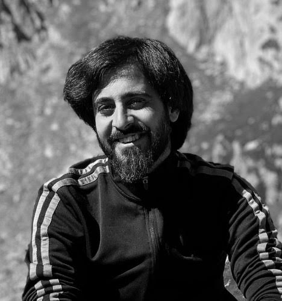
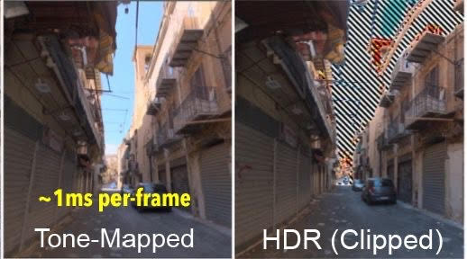
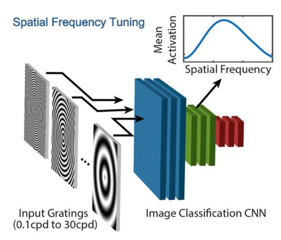
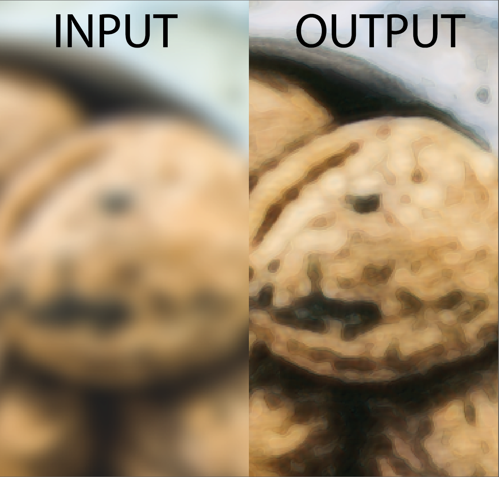
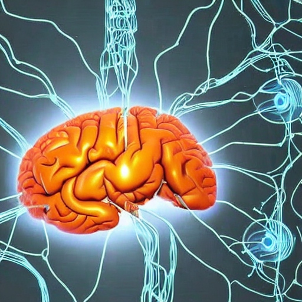
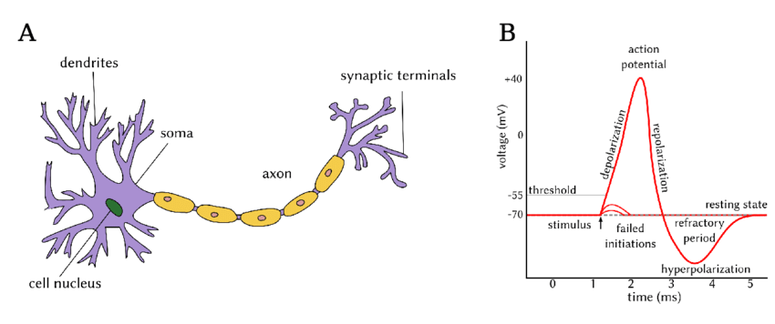

|
I am a PhD student at the USI Lugano, Switzerland, working with Piotr Didyk. I am working on the ERC Starting Grant supported PERDY project, focused on display-specific perceptual optimization of graphics content to match the requirements of human perception. I received my M.S. degree from KAIST, working with the Image and Video Computing Group. During my PhD, I have also worked with the Applied Perception Science team at Facebook Reality Labs, on real-time computational display algorithms for Virtual Reality displays.
Email / CV / Google Scholar / 500px 📷 / |
 |
{kind=link}
|
I enjoy demystifying and modelling how our eyes percieve the visual world, and my research interests lie in the intersection of vision science and computer graphics. More specifically, I work on understanding, quantifying and maximizing PERCEIVED visual realism for capture (camera processing pipeline), synthesis (rendering/graphics pipeline) and display (computational display). The long term goals I aim to push towards are; to advance our fundemental understanding of human perception and cognition, and apply this understanding to enable real-time immersive display techniques (VR/AR) that are indistunguisbile from the real-world. |
|
|
|
Representative projects are highlighted. |
|  |
An ultra-fast (under 1ms per-frame) framework that adaptively maintains the perceptual appearence of HDR content after tone-mapping. The framework relates human contrast perception across very different lumainances scales, and then optimizes any tone-mapping curve to minimize perceptual difference. SIGGRAPH Asia 2023 |

|
The fastest (200FPS at 4K) and first no-reference spatial metamers of human peripheral vision that we know of; specifically tailored for direct integration into the real-time VR foveated rendering pipeline. Save upto 40% (rendering time) over tranditional foveated rendering, without visible loss in quality. SIGGRAPH 2022 [journal] |
|  |
An investigation into why the representations learned by image recognition CNNs work remarkably well as features of perceptual quality (e.g perceptual loss). We theorize that these image classification representations learn to be spectrally sensitive to the same spatial frequencies which the human visual system is most sensitive to, so they can effectively encode perceptually visible distortions. European Conference on Computer Vision (ECCV), 2020 |
|  |
A human contrast perception inspired spatial attention mask that makes the deep learning pipeline aware of perceptually important visual information in images. International Conference on Computer Vision Workshops (ICCVW), 2019 |
|  |
A signal processing pipeline for unsupervised sorting of brain signals on impalntable neural chips, primarily for neuro-prosthetics. Computer Methods and Programs in Biomedicine, 2019 |
|  |
A new non-linear signal processing filter for detecting noisy brain action potentials. IEEE Engineering in Medicine and Biology Conference (EMBC), 2017 |